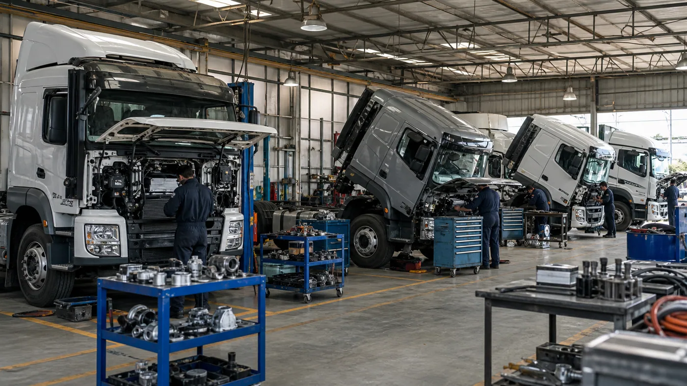

Durante julio de 2026 se patentaron 1.633 vehículos comerciales pesados en la Argentina. El volumen representó una baja del 10,6% frente a las 1.827 unidades de junio y un descenso del 19,4% respecto de los 2.027 registros de julio de 2025, según los datos de ACARA difundidos por medios especializados el 14 de agosto.
El acumulado de enero a julio llegó a 12.553 unidades, 5,9% por debajo de las 13.336 del mismo período del año anterior. El dato describe un mercado más cauteloso, pero no detenido: las posiciones entre modelos cambiaron y algunas marcas crecieron incluso dentro de un mes contractivo.
Qué mide un patentamiento
El patentamiento registra una unidad nueva incorporada formalmente al parque. No equivale de manera directa a producción, importación o pedido de fábrica, porque entre la compra y el alta puede existir una diferencia de tiempo. Sin embargo, es uno de los indicadores más útiles para observar la renovación efectiva de flotas.
En camiones, una variación mensual puede estar influida por entregas grandes, disponibilidad de determinadas configuraciones, financiación, tipo de cambio y decisiones de inversión de sectores como agro, minería, construcción, distribución y energía. Por eso conviene mirar la tendencia acumulada y no un solo mes aislado.
Los modelos más patentados de julio
El Iveco Stralis encabezó el ranking con 105 unidades y una participación aproximada del 6,4% del segmento. El Scania P350 quedó segundo con 100 patentamientos, después de crecer 108,3% frente a junio. El Iveco Tector 170E ocupó el tercer lugar con 95 registros.
Completaron las primeras posiciones el Mercedes-Benz Atego 1732, con 86 unidades, y el Foton Auman, con 75. La lista reúne aplicaciones diferentes: larga distancia, trabajo regional y distribución. Esa diversidad muestra que no hubo un único tipo de operación empujando el mercado.
- Iveco Stralis: 105 unidades.
- Scania P350: 100 unidades.
- Iveco Tector 170E: 95 unidades.
- Mercedes-Benz Atego 1732: 86 unidades.
- Foton Auman: 75 unidades.
Mercedes-Benz conservó el liderazgo por marca
Mercedes-Benz encabezó julio con 506 unidades. Iveco registró 345 y Scania 280. Entre las tres concentraron más de la mitad del mercado mensual. Esa participación tiene efectos posteriores sobre la demanda de mantenimiento, disponibilidad de piezas, capacitación y capacidad de los servicios técnicos.
También hubo movimientos fuera del podio. Volvo alcanzó 109 unidades y mejoró 10,1% frente a junio. Foton llegó a 108, con una suba mensual del 28,6% y un crecimiento interanual del 86,2%. Son avances relevantes porque amplían la variedad del parque y obligan a talleres y repuesteros a identificar con precisión cada aplicación.

Por qué bajó el mercado
Las cifras publicadas describen el resultado, pero no permiten atribuirlo a una sola causa. La compra de un camión depende de la tasa de financiación, la rentabilidad del flete, la expectativa de actividad, el costo operativo y la posibilidad de entregar una unidad usada. Un cambio en cualquiera de esos factores puede postergar la decisión.
La baja interanual del 19,4% indica que julio fue más débil que el mismo mes de 2025. El acumulado, en cambio, retrocedió 5,9%, una diferencia menor. Esto sugiere que el desempeño del año debe evaluarse mes a mes antes de hablar de una tendencia definitiva.
Qué cambia para talleres y casas de repuestos
Las unidades nuevas no generan de inmediato el mismo tipo de demanda que un camión antiguo. Durante los primeros años predominan mantenimiento programado, filtros, fluidos, frenos, suspensión, neumáticos y componentes de desgaste. A medida que el parque envejece, aumentan las reparaciones correctivas y la necesidad de piezas específicas.
La convivencia de varias generaciones exige abandonar la búsqueda basada únicamente en el nombre comercial. Un mismo modelo puede tener diferentes motores, cajas, ejes o sistemas de emisiones. Año, VIN, número de motor, código de pieza y fotografía siguen siendo los datos más seguros para cotizar.
Señales para una empresa de transporte
- Costo total: comparar consumo, mantenimiento, financiación, seguro y valor de reventa.
- Aplicación correcta: elegir relación, potencia, configuración de ejes y cabina según la tarea real.
- Posventa: evaluar cobertura de servicio y disponibilidad de repuestos en las rutas habituales.
- Capacitación: prever formación para conductores y técnicos cuando cambia la tecnología.
- Datos de operación: medir kilómetros, ralentí, consumo y paradas antes de justificar una renovación.
Qué puede ocurrir en los próximos meses
El resultado de julio no anticipa por sí solo el cierre del año. Sectores como minería, Vaca Muerta y agro pueden sostener demanda de configuraciones específicas, mientras que la distribución urbana responde a otras variables. La disponibilidad de crédito y las entregas de fábrica serán determinantes.
Para Zabala Repuestos, el punto práctico es observar cómo se transforma el parque sin perder de vista las unidades que continúan trabajando. La renovación genera nuevas aplicaciones, pero los camiones de años anteriores todavía concentran gran parte del mantenimiento cotidiano. Un catálogo útil debe atender ambos mundos.